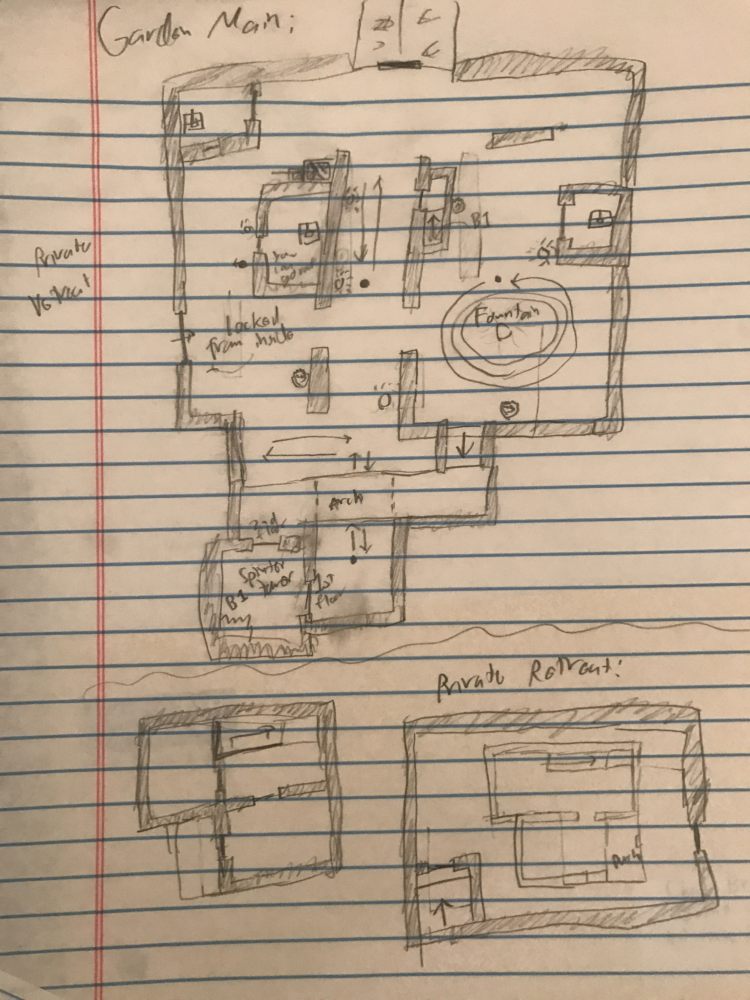

Old Habits and Dead Wives
A Thief 2 Fan Mission
Wide Linear, Stealth, Exploration7 Month Solo Project
Released September 27, 2022
Old Habits and Dead Wives is a fully complete, ~1.5 hour long level for Thief 2 (2000) that encourages careful stealth and creative navigation. Players fill the role of a thief hired by an unknown person to break into the mansion vault at a mountain estate, unraveling the mystery of their employer and the estate's owner as they navigate the interconnected space of both the mansion and the surrounding environment.


Paper Layout planning
This project was the first time I attempted to approach level design from a more formal and planned angle, so before I jumped into the editor I drafted up layout concepts on graph paper. I had a process of paper designing portions of the level, implementing them in-game, testing the level up to that point, iterating on these portions, and repeating. Most of my paper designs didn't directly translate well into the editor, in part because my paper proportions were terrible and a fair amount changed in response to testing, but the fundamental concepts are still mostly there.Check out a PDF of my paper plans/notes here.
As a note of self-criticism, the level would have benefitted from me conceptualizing the setting more before I got into prototyping. The first chunk of playable space I created was done before I had a strong grasp on the story and context of the level, and as a result it feels the most disjointed, even after a lot of post-feedback overhauls.
Old Habits and Dead Wives
A Thief 2 Fan Mission
Wide Linear, Stealth, Exploration7 Month Solo Project
Released September 27, 2022
Old Habits and Dead Wives is a ~1.5 hour long, fully complete level for Thief 2 (2000) that encourages careful stealth and creative navigation. Players fill the role of a thief hired by an unknown person to break into the mansion vault at a mountain estate, unraveling the mystery of their employer and the estate's owner as they navigate the interconnected space of both the mansion and the surrounding environment.